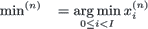
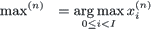
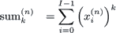

| Class statistics |
|
| dLabPro | Identifier | : | statistics |
|
| Base class | : | - |
||
| Properties | : | CS_AUTOACTIVATE | ||
| Default Instance | : | |||
| Compatibility | : | dLabPro |
||
| C/C++ | Wrapper Class | : |
typedef struct CStatistics |
|
| Compatibility | : | ANSI-C, ANSI C++ | ||
| General | Author | : | Matthias Wolff, Christian-M. Westendorf | |
| Version | : | 1.0.0 | ||
Synopsis
Multivariate multiclass statistics
Description
Instances of class statistics contain, collect and process multivariate multiclass statistics
data.
The typical workflow of the statistics class is as follows
1 - Initialize statistics (-setup) |
||
2 - Gather raw statistics data (-update) |
→ 2.a - Save statistics to a file (-save) | |
| 3.a - Read statistics from file (-restore) → | 3 - Estimate statistic parameters (see method list) |
Raw Statistics Data
The statistics stores the following data (see field dat):
| Description | Collection function (see -update) |
|---|---|
| Sample size (number of training vectors) |
|
| Minimum vector |  |
| Maximum vector |  |
| Sum vector | |
| Mixed sum matrix | |
| k-th order sum vector(s) |  |
All vectors have N components indexed ·(n) where N denotes the dimensionality of the statistics. The mixed sum matrices have N x N elements. The data shown in the table above describe one out of C classes of statistics data. A class may be thought of as distinct statistics for one label in a labelled data set. We index the class with c and define 0 ≤ c < C.
See description of field dat for details on the structure of the raw statistics data in memory.
Statistic Parameter Estimation
From the raw statistic data described above a variety of statistic parameters can be estimated, among others:
- Sample properties
class frequency and a-priori probability
- General
minimum, maximum, span width
- Moments and Variance
arithmetic mean, standard deviation, variance, k-th (central) moment
- Corrlation and Covariance
scatter, correlation coefficent, covariance matrices
- Higher Order Parameters
skewness, excess (kurtosis)
See the methods section for the complete list of statistics functions.
Mathematic Symbol Table
| Symbol | Description | Defined by / Remarks |
|---|---|---|
| C | Number of statistics classes | Number of blocks in the statistics data (field dat)- If present, the symbolic label table (field ltb) must contain exactly C records |
| K | (Maximal) order of statistics | Number of records per blocks in the statistics data (field dat) minus N minus 2 |
| N | Dimensionality | Number of components in the statistics data(field dat) |
| E(X) | Expectation of random variable X | |
| Var(X) | Variance of random variables X and Y | see -var |
| Cov(X,Y) | Covariance of random variables X and Y | see -cov |
| Cor(X,Y) | Correlation coefficients of random variables X and Y | see -corc |
| mk | k-th order ordinary (absolute, initial) moment | see -kmoment, -mean |
| μk | k-th order central moment | see -kmoment |
| μ'k | k-th order cumulant |
TODO:
| Method | Author | Status | Source file | Remarks |
|---|---|---|---|---|
idHi idLo nEps iThis -mean_ciidHi idLo nEps iThis -var_ci |
n.n. n.n. |
 |
sta_cnf.c |
Mean confidence interval Variance confidence interval |
k idDst iThis -cumulant |
MW |
|
sta_cum.c |
|
iSrc idMap iThis iSrc idKeep iThis -reorg |
MW n.n. |
 2006-06-16 2006-06-16? |
sta_reo.c |
Who needs this? |
Class Members
| Fields | Home Top Fields Options Methods C/C++ Errors |
dat | Statistic data. |
ltb | Symbolic label table. |
min_var | Minimum value for (co)variances. |
weighted | Weighted statistics |
| Options | Home Top Fields Options Methods C/C++ Errors |
/central | Estimate central moments. |
/label | Ignore label indices if there some. |
/sn | For backward compatibility of (co)variance estimation. |
| Methods | Home Top Fields Options Methods C/C++ Errors |
-corc | <data idDst> <statistics this> -corc Estimates correlation coefficient matrices. |
-cov | <data idDst> <statistics this> -cov Estimates covariance matrices. |
-detc | <data idDst> <statistics this> -detc Estimates coefficient of determination matrices. |
-excs | <data idDst> <statistics this> -excs Estimates excess vectors. |
-freq | <data idDst> <statistics this> -freq Get sample size for all classes. |
-kmoment | <short k> <data idDst> <statistics this> -kmoment Estimates k-th order (central) moment vectors. |
-max | <data idDst> <statistics this> -max Get maximum vectors. |
-mean | <data idDst> <statistics this> -mean Estimates mean vectors. |
-merge | <statistics iSrc> <statistics this> -merge Merges two statistics |
-min | <data idDst> <statistics this> -min Get minimum vectors. |
-pool | <statistics iSrc> <data idMap> <statistics this> -pool Pools statistics classes. |
-prob | <data idDst> <statistics this> -prob Estimate a-priori class probabilities. |
-scat | <data idDst> <statistics this> -scat Estimates scatter matrices. |
-sdev | <data idDst> <statistics this> -sdev Estimates standard deviation vectors. |
-setup | <int nOrder> <int nDim> <int nCls> <data idLtb> <int nIcLtb> <statistics this> -setup Setup statistics. |
-skew | <data idDst> <statistics this> -skew Estimates skewness vectors. |
-span | <data idDst> <statistics this> -span Get sample spanwidth vectors. |
-status | <statistics this> -status Prints status information of the statistics. |
-update | <data idVec> <int nIcLab> <data idW> <statistics this> -update Update statistics with set of (labelled) vectors. |
-var | <data idDst> <statistics this> -var Estimates variance vectors. |
-varc | <data idDst> <statistics this> -varc Estimates variation coefficient vectors. |
| C/C++ API | Home Top Fields Options Methods C/C++ Errors |
| (see method list for additional C/C++ functions) | |
CStatistics_Check | INT16 CStatistics_Check(CStatistics _this);Performs a checkup of the CStatistics instances internal data. |
CStatistics_CheckDat | INT16 CStatistics_CheckDat(CStatistics _this);Checks the statistics' data (field m_idDat) for presence and consistency. |
CStatistics_CheckLtb | INT16 CStatistics_CheckLtb(CStatistics _this);Checks the statistics' label table (field m_idLtb) for consistency. |
CStatistics_CorrelationEx | INT16 CStatistics_CorrelationEx(CStatistics _this, CData* idDst, INT16 nMode);Estimates correlation based matrices (scatter, covariance, correlation/determination coefficient matrices) for all classes of the statistics. |
CStatistics_FreqEx | INT16 CStatistics_FreqEx(CStatistics _this, CData* idDst, BOOL bProb);Fills a data table with the sample size (frequency) or the estimated a-priori probability of the classes. |
CStatistics_GetDim | INT32 CStatistics_GetDim(CStatistics _this);Returns the statistics' dimensionality N. |
CStatistics_GetNClasses | INT32 CStatistics_GetNClasses(CStatistics _this);Returns the number of statistics classes (labels) C. |
CStatistics_GetNSamples | INT32 CStatistics_GetNSamples(CStatistics _this);Returns the total sample size over all classes. |
CStatistics_GetOrder | INT32 CStatistics_GetOrder(CStatistics _this);Returns the order of the statistics. |
CStatistics_MomentEx | INT16 CStatistics_MomentEx(CStatistics _this, CData* idDst, INT16 k, INT16 nMode);Estimates the k-th (central) moment vectors for all classes of the statistics. |
CStatistics_UpdateVector | INT16 CStatistics_UpdateVector(CStatistics _this, FLOAT64* lpX, INT32 c, FLOAT64 w);Updates the statistics with one vector. |
| Errors | Home Top Fields Options Methods C/C++ Errors |
statistics1001 | Model not properly set up%s. |
statistics1002 | %ld update vector(s) ignored. |
statistics1003 | Extra %s ignored. |
statistics1004 | %s has a wrong number of %s (should be %ld). |
statistics1005 | %s component of %s not found or of bad type (should be %s). |
statistics1006 | Record %ld contains a bad label ('%s'). |
statistics1007 | Record %ld contains a bad label (%ld). |
statistics1008 | Incompatible statistics. |
 (1)
(1) (2)
(2)